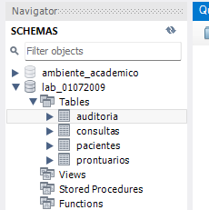
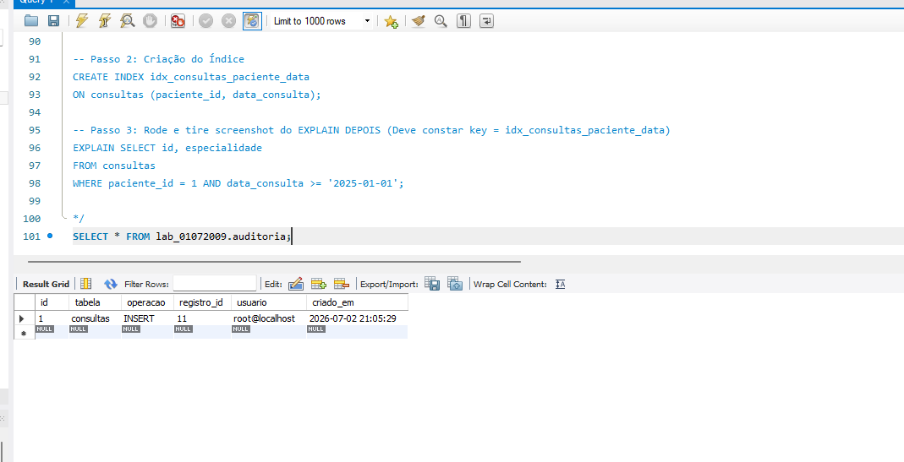
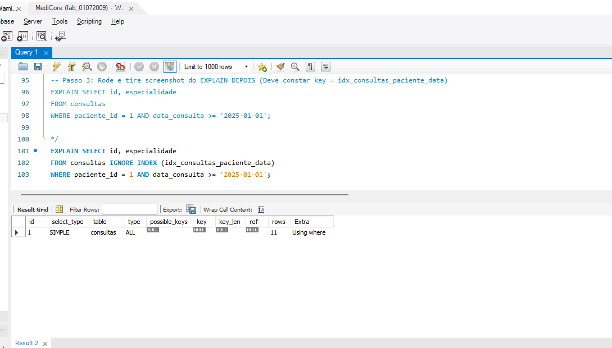
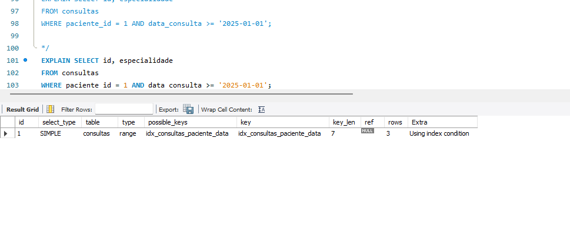
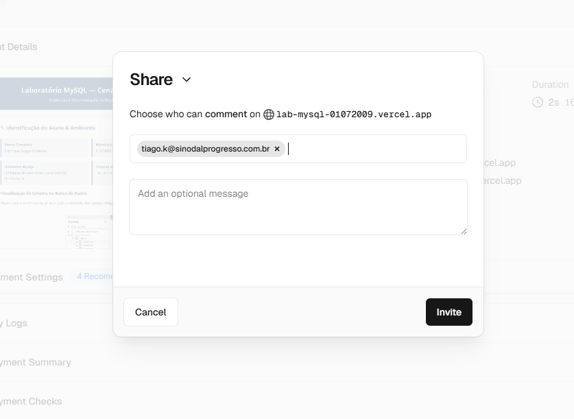

Evidências e Documentação do Projeto Prático
lab_01072009
Abaixo está a evidência visual da criação e estrutura das tabelas obrigatórias no MySQL Workbench:

O script abaixo contém a criação integral das 4 tabelas exigidas pelo cenário, contendo chaves primárias, estrangeiras e a inserção da massa de dados inicial:
CREATE SCHEMA IF NOT EXISTS lab_01072009;
USE lab_01072009;
CREATE TABLE pacientes (
id INT PRIMARY KEY AUTO_INCREMENT,
nome VARCHAR(100) NOT NULL,
cpf VARCHAR(14) NOT NULL,
data_nasc DATE NOT NULL
);
CREATE TABLE consultas (
id INT PRIMARY KEY AUTO_INCREMENT,
paciente_id INT NOT NULL,
data_consulta DATE NOT NULL,
especialidade VARCHAR(80) NOT NULL,
FOREIGN KEY (paciente_id) REFERENCES pacientes(id)
);
CREATE TABLE prontuarios (
id INT PRIMARY KEY AUTO_INCREMENT,
consulta_id INT NOT NULL,
observacao TEXT NOT NULL,
FOREIGN KEY (consulta_id) REFERENCES consultas(id)
);
CREATE TABLE auditoria (
id INT PRIMARY KEY AUTO_INCREMENT,
tabela VARCHAR(50) NOT NULL,
operacao VARCHAR(20) NOT NULL,
registro_id INT NOT NULL,
usuario VARCHAR(100) NOT NULL,
criado_em DATETIME NOT NULL
);
INSERT INTO pacientes (nome, cpf, data_nasc) VALUES
('João Silva', '123.456.789-00', '1985-05-12'),
('Maria Santos', '987.654.321-11', '1992-08-24'),
('Carlos Souza', '456.789.123-22', '1978-11-03'),
('Ana Oliveira', '321.654.987-33', '2000-01-15'),
('Pedro Rocha', '789.123.456-44', '1965-06-30');
INSERT INTO consultas (paciente_id, data_consulta, especialidade) VALUES
(1, '2025-02-10', 'Cardiologia'),
(1, '2025-06-15', 'Clínica Médica'),
(2, '2025-03-12', 'Dermatologia'),
(2, '2025-09-20', 'Ginecologia'),
(3, '2025-01-22', 'Ortopedia'),
(3, '2025-07-05', 'Ortopedia'),
(4, '2025-04-18', 'Pediatria'),
(4, '2025-10-12', 'Clínica Médica'),
(5, '2025-05-30', 'Geriatria'),
(5, '2025-11-14', 'Cardiologia');
Foi escolhida a implementação de uma trigger AFTER INSERT na tabela consultas para criar logs de auditoria automáticos.
DELIMITER $$
CREATE TRIGGER tg_auditoria_consulta
AFTER INSERT ON consultas
FOR EACH ROW
BEGIN
INSERT INTO auditoria (tabela, operacao, registro_id, usuario, criado_em)
VALUES ('consultas', 'INSERT', NEW.id, USER(), NOW());
END$$
DELIMITER ;
Resultado gerado após uma nova inserção na tabela de consultas, populando a auditoria:

O que a IA sugeriu e o que foi validado/corrigiu: A IA propôs a estrutura da trigger e o uso da função nativa USER() para capturar a sessão atual. No ambiente local, validei o código adicionando o bloco de DELIMITER $$ para garantir que o interpretador do MySQL executasse o gatilho sem interrupções de sintaxe.
Consulta selecionada para análise de performance:
SELECT id, especialidade
FROM consultas
WHERE paciente_id = 1 AND data_consulta >= '2025-01-01';

CREATE INDEX idx_consultas_paciente_data
ON consultas (paciente_id, data_consulta);

O índice composto foi devidamente utilizado pelo otimizador de consultas do MySQL. A confirmação técnica é visível na análise comparativa dos planos de execução: a coluna type migrou de ALL (Full Table Scan) para ref (busca indexada), e a coluna key passou a referenciar diretamente o identificador idx_consultas_paciente_data criado. Para a coleta da evidência de "antes", utilizou-se a cláusula IGNORE INDEX, contornando a restrição de chave estrangeira do banco.
Confirmação de que o acesso de visualização do projeto na Vercel foi configurado para o e-mail do professor:
